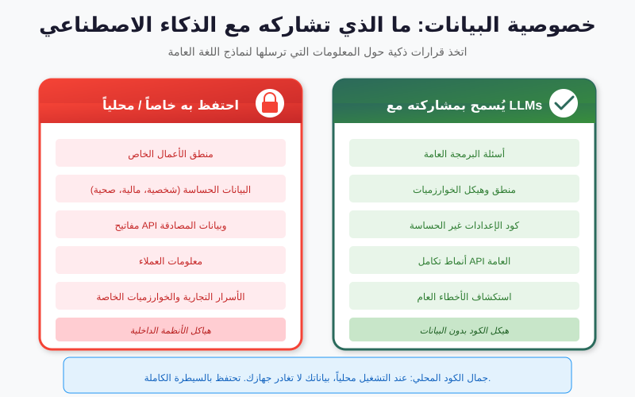
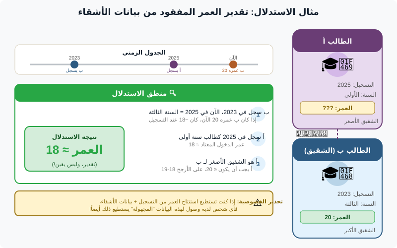

ما سنغطيه
- التأطير — القدرة ليست إذناً؛ الخطوط الأربعة التي ترسمها هذه الجلسة
- المقبولية — الاختبار، وعوامل الموثوقية، ومتى يُستبعد الدليل
- آليات سلسلة الحيازة — التجزئة، وأدوات منع الكتابة، والتدوين المتزامن (النشاط 1)
- التزامات الخصوصية والأمن التشغيلي — مبادئ حماية البيانات ونموذج تهديد للذكاء الاصطناعي السحابي
- إزالة التعريف — فئات Safe Harbor الثماني عشرة، وشبه المُعرِّفات، والبتّات (النشاط 2)
- كشف الهوية — هجوم ربط Sweeney خطوة خطوة، ودراسات الحالة (النشاط 3)
- الدفاعات والخلاصة — من إخفاء الهوية بدرجة k إلى الخصوصية التفاضلية؛ جسر إلى الجزء الرابع
متى يكون الدليل مقبولاً
المقبولية (قبول الدليل) هي ما إذا كانت المحكمة ستقبل دليلك من الأساس. فالقدرة على استخراج البيانات والحق في الاعتماد عليها مسألتان مختلفتان، والثانية هي التي تحسم القضية. فقد تستخرج نسخة مثالية وكاملة من هاتف ومع ذلك ترى الأمر برمّته يُرفض بسبب الطريقة التي وصلت بها إليها. وعموماً، يكون الدليل الرقمي مقبولاً عندما يكون:
مقبول عندما…
تم الحصول عليه بصورة قانونية (بصلاحية/أمر قضائي سليم)؛ ويمكن إثبات سلامته (التجزئة، وأدوات منع الكتابة)؛ وسلسلة الحيازة غير منقطعة وموثَّقة؛ والطريقة موثوقة وقابلة لإعادة الإنتاج؛ والمحلِّل مؤهَّل لشرحها.
مرفوض عندما…
تم الحصول عليه بصورة غير قانونية أو خارج نطاق الأمر القضائي؛ أو جرى تعديله أو تعذّر إثبات سلامته؛ أو كانت في الحيازة ثغرات؛ أو كانت التقنية صندوقاً أسود لا يستطيع أحد شرحه؛ أو تعذّرت إعادة إنتاجه.
اقرأ العمودين بوصفهما صورتين متعاكستين. فكل سبب تقريباً يُرفض لأجله الدليل هو غياب شيء ما من العمود الأيمن. وهذا خبر سار لك كممارس: فالمقبولية في معظمها مجموعة من العادات التي يمكنك بناؤها في سير عملك قبل أن ينشأ أي نزاع، لا حجة تكسبها في قاعة المحكمة بعد ذلك.
هذا يقيّد خياراتك في الذكاء الاصطناعي مباشرة. فالنموذج الذي لا يستطيع شرح لماذا أشار إلى ملف ما، أو الذي يستلزم رفع الدليل إلى خدمة طرف ثالث غير شفافة، قد ينتج نتيجة لا تستطيع الدفاع عنها. فالقابلية للتفسير والحيازة ليستا من الكماليات — بل هما متطلَّبان للمقبولية. وهذا سبب رئيسي لتفضيل الجزء الرابع الأدواتِ الداخلية القابلة للفحص.
للنقاش
لنفترض أن أداة فرز بالذكاء الاصطناعي دقيقة بنسبة 99% في الإشارة إلى الصور غير المشروعة، لكن مزوّدها لن يشرح كيف يقيّمها، والسبيل الوحيد لتشغيلها هو رفع دليلك إلى سحابة المزوّد. هل تكون المخرجات مقبولة؟ وهل تستخدمها أصلاً؟ لاحظ أن رقم الدقة يكاد لا يكون ذا صلة — فالمشكلة هي الشيئان اللذان لا تستطيع عرضهما على المحكمة.
عوامل الموثوقية والاستبعاد
تبدو عبارة «موثوقة وقابلة لإعادة الإنتاج» غامضة، لذا منحتها المحاكم بنية. ويأتي أكثر التأطيرات استشهاداً من المعيار الأمريكي Daubert، لكن الأسئلة الكامنة وراءه من قبيل البديهة وتنتقل جيداً عبر الولايات القضائية. وعندما يُطعن في موثوقية طريقة ما، اسأل ما إذا كانت قد:
- خُضِعت للاختبار. هل جُرّبت التقنية فعلاً في مواجهة إجابات معروفة، أم إنه يُزعم أنها تعمل؟ فالأداة ذات مجموعة تحقّق موثَّقة تتفوّق على أداة لها كتيّب مبيعات واثق.
- راجعها الأقران ونُشرت. هل عُرِضت الطريقة لتمحيص خارجي من أشخاص لا مصلحة لهم في بيعها؟
- اتسمت بمعدل خطأ معروف. هل تأتي الطريقة بمعدلات مقيسة للإيجابيات الكاذبة والسلبيات الكاذبة؟ إن قول «لا نعرف عدد مرات خطئها» هو في حد ذاته نتيجة.
- قُبلت عموماً. هل يستخدمها الممارسون في المجال المعني ويثقون بها فعلاً، أم إنها حالة فريدة؟
لاحظ كم تسجّل نتيجة سيئة نماذجُ الذكاء الاصطناعي المغلقة والمملوكة في مواجهة هذه العوامل الأربعة: فقد يكون معدل خطئها غير معلن، وبنيتها الداخلية غير منشورة، وقبولها مزعوماً لا مكتسباً. والأسئلة الأربعة نفسها هي بالضبط سبب تمتّع أدوات الجزء الرابع الشفافة بميزة في قاعة المحكمة لا علاقة لها بالدقة الخام.
يُستبعد الدليل لأسباب عادية يمكن تفاديها. فقد يجري تفتيش خارج نطاق الأمر القضائي — إذ غطّى الأمر السجلات المالية، فيما سحب المحلِّل أيضاً صور العائلة — فتُقمَع المادة الزائدة. أو لا تتطابق تجزئة النسخة العاملة مع الأصل المأخوذ عند الضبط، فتنهار سلامة المُستند بأكمله. أو تكون هناك ثغرة ثلاثة أيام في سجل الحيازة لا يستطيع أحد أن يقول فيها أين كان القرص، فيجد الدفاع شكّه المعقول. ولا شيء من هذا غريباً؛ كل واحد منها عادة مفقودة.
آليات سلسلة الحيازة
سلسلة الحيازة هي الجواب الموثَّق عن سؤال ستطرحه المحكمة دائماً: هل تستطيع إثبات أن هذا المُستند هو البيانات نفسها التي ضبطتها، دون تعديل، وأنك قادر على تفسير وجودها في كل لحظة بينهما؟ وتؤدي ثلاث آليات معظم العمل تقريباً، وهي ملموسة بما يكفي للفحص.
التجزئة التشفيرية — إثبات السلامة
تقوم دالة التجزئة التشفيرية مثل SHA-256 باختزال أي قدر من البيانات إلى بصمة ثابتة من 256 بِتّاً. وغيّر بِتّاً واحداً في أي مكان من النسخة — اقلب بكسلاً واحداً، أو المس طابعاً زمنياً واحداً — فتتغيّر التجزئة كلياً وبصورة لا يمكن التنبؤ بها. وسير العمل بسيط وفعّال على نحو ساحق: جزّئ الدليل عند الضبط، وجزّئ كل نسخة عاملة، ثم جزّئ مرة أخرى قبل العرض. فإن تطابقت القيم، تكون البيانات متطابقة بصورة قابلة للإثبات؛ وإن اختلفت، تكون قد أمسكت بالتعديل بدلاً من أن تفوته. والتجزئة هي العمود الفقري الرياضي لكامل متطلب «إمكان إثبات السلامة» المنبثق من اختبار المقبولية.
أدوات منع الكتابة — منع التعديل
تقع أداة منع الكتابة بين جهاز تحليلك والوسائط الأصلية، وتسمح فيزيائياً (أو برمجياً) بالقراءة فيما تمنع الكتابة. والسبب مهم: فمجرد توصيل قرص قد يتيح لنظام التشغيل تحديث طوابع زمنية للوصول أو إعادة تشغيل سجل، فيعدّل الأصل بصمت قبل أن تفتح ملفاً واحداً حتى. وتضمن أداة منع الكتابة بقاء المصدر للقراءة فقط، بحيث تظل التجزئة التي تأخذها بعد ذلك مطابقة لتلك المأخوذة عند الضبط. فأنت تستحوذ من الأصل الممنوع من الكتابة ثم تنجز كل عملك على نسخ.
التوثيق المتزامن — تفسير الزمن
الآلية الثالثة هي الأقل تقنية والأكثر تعثّراً في الغالب: دوّنها وهي تحدث. فسجل الحيازة المتزامن يدوّن من تعامل مع المُستند، ومتى، ولماذا، وماذا فعل، مع تدوين التجزئة عند كل عملية نقل. وكلمة «متزامن» هي الكلمة الحاملة للعبء — فالملاحظات المُعاد بناؤها من الذاكرة بعد أسابيع تحمل وزناً أقل بكثير، وثغرة واحدة غير مفسَّرة تكفي ليحاجّ الدفاع بأن الدليل ربما جرى العبث به.
النشاط 1 — اكسر التجزئة (في أزواج)
على أي جهاز، احسب SHA-256 لملف نصي قصير (مثلاً sha256sum
evidence.txt، أو ما يعادله في نظام تشغيلك). دوّن القيمة. الآن غيّر حرفاً واحداً
في الملف، واحفظ، وجزّئه مرة أخرى. قارن البصمتين.
- كم حرفاً من التجزئة تغيّر؟ (ستجد أن الأمر ليس «واحداً بواحد» — فالقيمة بأكملها تتبعثر.)
- لو لم يكن لديك سوى التجزئة الثانية، أكنت تستطيع معرفة ما الذي تغيّر؟ ولماذا تكون تلك الخاصية أحادية الاتجاه هي بالضبط ما تحتاجه الحيازة؟
- أين في سير عملك الخاص تدوّن هذه القيمة كي تكون متزامنة فعلاً؟
للنقاش
يقول زميل: «لم أستخدم أداة منع كتابة، لكنني جزّأت القرص فور توصيله، فالتجزئة تثبت السلامة.» ما الخطأ في هذا الاستدلال؟ (تلميح: ماذا تشهد التجزئة فعلاً، ومتى سنحت أول فرصة لتعديل البيانات؟)
أدوات التتبّع التي تحترم الخصوصية
لنفترض أنك بنيت أداة تتبّع فاعلاً عبر الأنظمة — بربط عمليات تسجيل الدخول وعناوين IP وبصمات الأجهزة. في اللحظة التي تلامس فيها خدمات تديرها أطراف أخرى، تصبح ملزَماً بـسياسات الخصوصية والشروط التي وافقت عليها مع هؤلاء المزوّدين، وبالقانون الذي يحمي الأشخاص الموجودين في البيانات. فبناء الأداة لا يعفيك من القواعد؛ بل يجعلك مسؤولاً عنها.
وتحت القواعد المحدّدة تقع حفنة من مبادئ حماية البيانات التي تتكرر في كل نظام حديث تقريباً (نظام GDPR هو أشهر تعبير عنها، لكن الأفكار مشتركة على نطاق واسع). وهي جديرة بالحفظ لأنها تخبرك، قبل أن تكتب سطراً من الشيفرة، بما يجب أن تفعله أداة تتبّع قابلة للدفاع عنها:
- الأساس القانوني. أنت تحتاج إلى سبب محدّد ومدوَّن يبيح لك معالجة كل قطعة بيانات — أمر قضائي، أو عقد، أو موافقة، أو مصلحة مشروعة. فقول «كانت متاحة» ليس أساساً قانونياً.
- تقييد الغرض. لا يجوز إعادة استخدام البيانات المجموعة لغرض ما في غرض آخر بصمت. فالدليل المجموع للتحقيق في احتيال ليس ملكاً لك لتنقّب فيه عن خيوط لا صلة لها.
- تقليل البيانات. اجمع أضيق مجموعة من البيانات تجيب عن السؤال، ولا أكثر. فكل حقل إضافي عبء إضافي وخطر إعادة تعريف إضافي.
- حدود الاحتفاظ. احتفظ بالبيانات فقط ما دام الغرض يقتضي، ثم تخلّص منها. فالاحتفاظ اللامحدود فشل قانوني وخرق ينتظر الحدوث في آنٍ واحد.
وتنطبق هذه واحدة بواحدة تقريباً على العادات العملية التي تحتاجها أداة التتبّع:
- ابقَ ضمن النطاق المأذون به. اجمع فقط ما يغطّيه فعلاً أمرك القضائي أو عقدك أو موافقة الشخص المعني. فالقدرة ليست إذناً.
- احترم شروط المزوّدين. إن كشط البيانات أو ربطها بطرق تحظرها سياسة المنصة قد يُفسد الدليل ويعرّضك للمساءلة.
- قلِّل بالتصميم. اجمع أضيق قدر من البيانات يجيب عن السؤال، واحتفظ به لأقصر مدة ممكنة، واعزل أي شيء يخص أطرافاً ثالثة غير معنية.
- سجِّل الأساس القانوني. لكل مصدر بيانات تلامسه الأداة، سجِّل الصلاحية التي تسمح به — وهي الانضباطية نفسها الخاصة بسلسلة الحيازة، مُطبَّقة على الخصوصية.
تأمين أثرك الرقمي
ها هو التماثل غير المريح: بينما تجري تحقيقك، فإن الأدوات التي أنت تستخدمها تحقّق فيك. فخدمة ذكاء اصطناعي سحابية تعالج دليلك ترى ذلك الدليل؛ وتطبيق تحليل «مجاني» يُحقّق دخلاً من بيانات القياس عن بُعد؛ وإضافة المتصفّح تقرأ ما تلامسه. وعندما تكون المادة بدرجة دليل، فإن تسريبها خرقٌ أمني وفشلٌ في الحيازة معاً.
تخيّل لصق سجل محادثات ضحية في روبوت دردشة عام لـ«تلخيصه». لقد غادر هذا السجل الآن حيازتك، ونُقل عبر حدود، وربما احتُفظ به لتدريب النماذج. ربما تكون قد انتهكت خصوصية الضحية، وشروط المزوّد، ومقبولية الدليل — بعملية لصق واحدة.
والعقلية القابلة للدفاع عنها هي نموذج تهديد موجز تطبّقه قبل أن يلامس أي دليل أي خدمة خارجية. والافتراض المبدئي عدائي، وهو مُحرِّر بمجرد أن تقبله:
- افترض أن كل خدمة خارجية جامع للبيانات. عامل أي ذكاء اصطناعي سحابي أو API أو تطبيق «مجاني» بوصفه طرفاً يحتفظ بما ترسله ويفحصه وربما يتدرّب عليه — إلى أن تقرأ وتتحقّق من خلاف ذلك كتابةً. اقرأ ما تحتفظ به، وأين، ولأي مدة، قبل أن يلامسها أي دليل.
- أبقِ الدليل محلياً. فضِّل الأدوات التي تعمل على بنية تحتية تتحكّم فيها، بحيث لا يعبر الدليل أبداً حدّاً لا تستطيع تفسيره — وهو الخيط الموصل إلى الجزء الرابع.
- شفّر في حال السكون وفي حال النقل. تشفير القرص الكامل أو الوحدة على نسخك العاملة، وTLS لأي شيء يتحرّك فعلاً، والمفاتيح بحوزتك — لا بحوزة الخدمة.
- تحكّم في الوصول ودقّقه. حسابات بأقل امتياز، وسجل تدقيق لمن فتح النسخ العاملة، كي تكون قصة حيازتك بنفس إحكام قصة الدليل.

للنقاش
استعرض أداة ذكاء اصطناعي سحابية واحدة تستخدمها أنت (أو مؤسستك) فعلاً. بالنسبة إلى بيانات بدرجة دليل: إلى أين ستذهب البيانات فيزيائياً، ومن يستطيع قراءتها، وكم تُحفظ، وهل تستطيع إثبات أيٍّ من ذلك للمحكمة؟ فإن عجزت عن الإجابة عن الأربعة من الوثائق، فإن الأداة تفشل في نموذج التهديد — فماذا ستفعل بدلاً من ذلك؟
إزالة التعريف وشبه المُعرِّفات
إزالة التعريف هي إزالة المعلومات التي تربط البيانات بشخص ما. والنسخة الساذجة — حذف الاسم والمُعرِّف — تفشل، لأن الهوية تختبئ في تركيبات من الحقول «غير الضارة». ومعيار مثل HIPAA Safe Harbor يقنّن ذلك باشتراطه إزالة 18 فئة من المُعرِّفات، لا الأسماء فقط: التواريخ (الميلاد، والدخول، والخروج)، ورموز ZIP، وأرقام الهاتف والفاكس، وعناوين البريد الإلكتروني، ومُعرِّفات الأجهزة، وعناوين IP، والبيانات الحيوية، والصور كاملة الوجه، وغيرها. والمغزى من القائمة هو بالضبط أن «احذف الاسم» ليس كافياً بأي حال — فالهوية تتسرّب عبر عشرات الحقول التي لا يظنّها أحد اسماً.
أما الحقول التي ليست مُعرِّفة بوضوح لكنها تصبح كذلك عند التركيب فهي شبه المُعرِّفات: سمات مثل رمز ZIP، وتاريخ الميلاد، والجنس، والمسمى الوظيفي، أو تاريخ الدخول، وهي ليست فريدة بمفردها لكنها تضيّق السكان بحدة عند جمعها. وتُعدّ نتيجة Latanya Sweeney التحذيرَ النموذجي:
يمكن تحديد هوية 87% من سكان الولايات المتحدة بصورة فريدة بثلاثة حقول فقط: رمز ZIP + تاريخ الميلاد + الجنس. ولا يُعدّ أيٌّ منها «اسماً»، ومع ذلك فهي معاً بصمة. «شبه المُعرِّفات التي تبدو غير ضارة بمعزل عن بعضها تصبح مُعرِّفة عند الجمع بينها.»

وهناك طريقة دقيقة للحديث عن «مقدار التعريف» الذي يحمله حقل: بتّات المعلومات المُعرِّفة، بمعنى إنتروبيا شانون. فكل بِتّ يقسم تقريباً السكان الذين ما زالوا متّسقين مع البيانات إلى نصفين. وتقسيم العالم بحسب الجنس يعطي نحو بِتّ واحد؛ ورمز ZIP من خمسة أرقام قد يعطي بتّات كثيرة؛ وتاريخ ميلاد كامل يعطي أكثر بعد. كدّس ما يكفي من البتّات فتعبر العتبة التي لا يبقى عندها سوى شخص واحد. وهذا بالضبط سبب قدرة ثلاثة شبه مُعرِّفات «غير ضارة» على إعادة تعريف معظم دولة — فهي معاً تحمل ببساطة ما يكفي من البتّات.
النشاط 2 — عُدّ البتّات
افتح عرض إنتروبيا شانون وشغّله على بضعة حقول واحداً تلو الآخر: الجنس، ثم رمز ZIP، ثم تاريخ الميلاد الكامل، ثم تركيبة من الثلاثة جميعاً.
- دوّن بتّات المعلومات المُعرِّفة التي يساهم بها كل حقل بمفرده.
- هل تتجمّع البتّات تقريباً عند جمعك الحقول؟ وعند أي مجموع يتقلّص السكان إلى شخص واحد؟
- جِد حقلاً افترضت أنه «مجهول» فتبيّن أنه يحمل عدداً مفاجئاً من البتّات. تلك الفجوة في الحدس هي الدرس كله.
كشف الهوية: هجوم الربط
كشف الهوية (إعادة التعريف) يعكس إزالة التعريف عبر ربط مجموعة بيانات «مجهولة» بأخرى خارجية تشاركها شبه المُعرِّفات. وقد اشتهرت Sweeney بإعادة تعريف السجل الطبي لحاكم ولاية بربط مجموعة خروج مرضى من مستشفى «مجهولة» بسجلات الناخبين العامة عبر ZIP + تاريخ الميلاد + الجنس. وهذا ليس خطراً نظرياً؛ إنه طريقة قابلة للتكرار، وهو السبيل الذي يتجاوز به المحققون (والخصوم) حدود البيانات التي جُمعت رسمياً.
ويجدر تتبّع هجوم ربط Sweeney خطوة خطوة، لأنك حين ترى الشكل ستتعرّف عليه في كل مكان:
- ابدأ بالمجموعة «المجهولة». تُصدر وكالة حكومية سجلات خروج مرضى من المستشفى مع تجريدها من الأسماء والمُعرِّفات الصريحة — لكن كل سجل ما زال يحمل رمز ZIP للمريض، وتاريخ ميلاده، وجنسه، وتشخيصه. واعتُبر نشرها آمناً.
- احصل على مجموعة عامة متداخلة. سجلات تسجيل الناخبين عامة، وقابلة للشراء مقابل رسم زهيد. وهي تحتوي على اسم وعنوان كل ناخب إلى جانب رمز ZIP الخاص به، وتاريخ ميلاده، وجنسه — شبه المُعرِّفات نفسها بالضبط.
- اربط على شبه المُعرِّفات المشتركة. طابِق الجدولين حيث يتفق رمز ZIP + تاريخ الميلاد + الجنس. ولأن ذلك الثلاثي شبه فريد (نتيجة الـ87%)، فإن معظم الصفوف تطابق ناخباً واحداً بالضبط.
- اقرأ الهوية. يوفّر سجل الناخبين الاسم؛ ووفّر سجل الخروج التشخيص. والسجل الطبي «المجهول» صار له الآن اسم مرفق — بما في ذلك سجل الحاكم، الذي أرسلته Sweeney إلى مكتبه ليثبت المغزى.
وبلغة قواعد البيانات هو ربط واحد: المجموعة الطبية المجهولة ⋈ سجل الناخبين العام على (ZIP، تاريخ الميلاد، الجنس). ولم يُخترق شيء. مجموعتا بيانات مُحصَّلتان قانونياً، مربوطتان على حقول لم يظنّها أحد مُعرِّفة، أذابتا غُفلية كلتيهما. ويتكرّر النمط نفسه عبر أشهر حالات إعادة التعريف:

| الحالة | السنة | البيانات | الهجوم | النتيجة |
|---|---|---|---|---|
| Netflix Prize | 2006 | تقييمات أفلام (المُعرِّفات مستبدَلة) | المقارنة المتبادلة مع مراجعات IMDb العامة | تحديد 99% من 8 تقييمات |
| تسريب بحث AOL | 2006 | سجلات بحث «مجهولة» | قراءة الاستعلامات نفسها | التعرف على المستخدمين من عمليات بحثهم |
| Sweeney / GIC | 1997 | سجلات خروج مرضى من المستشفى | الربط بسجلات الناخبين (ZIP+تاريخ الميلاد+الجنس) | إعادة تعريف سجل الحاكم؛ 87% من سكان الولايات المتحدة معرّضون |
| آثار الموقع | 2013 | نقاط GPS من الهاتف المحمول | تحليل أنماط الحركة | 95% فريدة من 4 نقاط فقط |
| Cambridge Analytica | 2018 | ملفات الرسم البياني الاجتماعي | الاستدلال من «الإعجابات» + الربط | استغلال نحو 87 مليون ملف |
جملة واحدة لكلٍّ، حتى يكون النمط لا تخطئه عين:
- Netflix Prize (2006) — طابق الباحثون الطوابع الزمنية والدرجات «المجهولة» للتقييمات مع مراجعات IMDb العامة وأعادوا تعريف مشتركين أفراد، 99% من 8 تقييمات فقط.
- تسريب بحث AOL (2006) — استبدلت السجلات «المجهولة» الأسماء بأرقام، لكن عمليات بحث الناس أنفسهم (عنوانهم، وعائلتهم، وعللهم) سمّتهم صراحة.
- Sweeney / GIC (1997) — أعاد هجوم الربط أعلاه تعريف سجل خروج الحاكم وأظهر أن 87% من سكان الولايات المتحدة معرّضون عبر ZIP + تاريخ الميلاد + الجنس.
- آثار الموقع (2013) — حركة الإنسان مميِّزة لدرجة أن أربع نقاط تقريبية للزمان والمكان جعلت 95% من الناس قابلين للتعريف بصورة فريدة في مجموعة بيانات تنقّل.
- Cambridge Analytica (2018) — رُبطت ملفات بُنيت من «إعجابات» فيسبوك واستُدلّ عليها لاستغلال بيانات نحو 87 مليون شخص للاستهداف السياسي.
النشاط 3 — شغّل الهجوم
افتح عرض هجوم الربط، الذي يحرّك هجوم Sweeney بالضبط — جدول طبي «مجهول» يُطابَق بقائمة ناخبين عامة على شبه المُعرِّفات الثلاثة.
- تنقّل عبر الربط ودوّن أي المرضى يُعاد تعريفهم وأيهم ينجو. لماذا تقاوم بعض الصفوف؟
- ما أصغر مجموعة من شبه المُعرِّفات تظل تكسر معظم الجدول؟
- ثم افتح عرض استدلال العائلة: كيف يختلف استنتاج واقعة لم تُسجَّل قَطّ عن الربط، ولماذا يصعب الدفاع ضده أكثر؟

للنقاش
كل حالة أعلاه استخدمت بيانات حُصِّلت قانونياً و«جُهِّلت» بحسن نية. فإن لم تُنتهك أي قاعدة عند جمعها، فأين يقع الخطأ بالضبط — عند الإصدار، أم عند الربط، أم عند الاستخدام؟ وكيف يشكّل ذلك ما يجوز لك فعله بإعادة تعريف تستطيع إجراءها؟
دفاعات تنجح فعلاً
لأن حذف الأسماء لا يكفي، فإن الحماية الحقيقية تعمل على شبه المُعرِّفات وعلى مُخرَجات أي تحليل. وهذا هو السلّم المعياري، مع مثال من سطر واحد لكلٍّ:
- k-anonymity (إخفاء الهوية بدرجة k) — تعميم/كبت الحقول بحيث يكون كل سجل غير قابل للتمييز عن k−1 سجلاً آخر على الأقل. مثال: استبدل تواريخ الميلاد الدقيقة بسنوات الميلاد، ورموز ZIP بأرقامها الثلاثة الأولى، إلى أن يتشارك خمسة أشخاص على الأقل كل تركيبة (k=5). (إيجاد التعميم الأمثل من نوع NP-hard — وهو موضوع متكرر: فالخصوصية والحوسبة متشابكتان.)
- l-diversity — تعزيز إخفاء الهوية بدرجة k بحيث تحتوي كل مجموعة غير قابلة للتمييز أيضاً على l من القيم الحساسة المختلفة على الأقل. مثال: إذا كان الخمسة كلهم في مجموعة يتشاركون التشخيص «HIV+»، فإن إخفاء الهوية بدرجة k أخفى من لكن ليس ماذا — فيفرض l-diversity أن تحمل المجموعة تشخيصات متنوعة.
- t-closeness — المضي أبعد بحيث يكون توزيع القيم الحساسة في كل مجموعة قريباً (ضمن t) من التوزيع في مجموعة البيانات بأكملها. مثال: مجموعة 80% منها سرطان فيما السكان 5% سرطان لا تزال تسرّب — ويستبعد t-closeness ذلك.
- الخصوصية التفاضلية — إضافة ضوضاء مُعايَرة بحيث لا يكاد وجود أي شخص واحد يغيّر النتيجة، مع ميزانية خصوصية قابلة للقياس (ε) تستنزفها مع كل استعلام. مثال: أجب عن «كم مريضاً مصاب بالسكري؟» بالعدد الحقيقي مضافاً إليه قليل من الضوضاء العشوائية، بحيث لا يمكن كشف إضافة مريض أو إزالته من الإجابة.
النشاط 4 — أنفق الميزانية
افتح متتبّع ميزانية الخصوصية واطرح على مجموعة البيانات سلسلة من الأسئلة، مشاهداً ميزانية الخصوصية التفاضلية (ε) تنضب مع كل سؤال.
- كم استعلاماً تستطيع طرحه قبل أن تجبرك الميزانية المتبقية على التوقف؟
- ماذا يحدث للضوضاء (ولثقتك في الإجابات) كلما قاربت الميزانية النفاد؟
- اربطها بالموضوع: لماذا يكون «استمر فحسب في استعلام المجموعة المجهولة» مساراً مضموناً لإعادة التعريف، وكيف يمنع ذلك ε محدود رسمياً؟
للنقاش
كل درجة في السلّم تكلّف شيئاً — تعميم الحقول، إضافة الضوضاء — من دقة البيانات أو فائدتها. وبالنسبة إلى مجموعة بيانات جنائية عليك مشاركتها مع محققين شركاء أو الإفصاح عنها لفريق دفاع، إلى أي مدى في السلّم يكون «كافياً»؟ ومن يقرّر، وفي مواجهة أي معيار؟
الخلاصة ومزيد من التمرين
- المقبولية — الحصول القانوني، والسلامة القابلة للإثبات، والحيازة غير المنقطعة، والطريقة القابلة لإعادة الإنتاج — تحسم ما إذا كان الدليل معتدّاً به، وتقيّد أي ذكاء اصطناعي يجوز لك استخدامه؛ والموثوقية تتوقّف على ما إذا كانت الطريقة مُختبَرة، ومُراجَعة من الأقران، ومعروفة معدل الخطأ، ومقبولة.
- سلسلة الحيازة تعمل بثلاث آليات: تجزئة SHA-256 لإثبات السلامة، وأدوات منع الكتابة لمنع التعديل، والتوثيق المتزامن لتفسير الزمن.
- بناء أداة تتبّع لا يعفيك من مبادئ الخصوصية والقانون — الأساس القانوني، وتقييد الغرض، وتقليل البيانات، وحدود الاحتفاظ — الناظمة للبيانات التي تلامسها.
- كل خدمة خارجية هي جامع بيانات: افترض أنها تجمع، وأبقِ الدليل محلياً، وشفّر في حال السكون وفي حال النقل.
- الهوية تختبئ في شبه المُعرِّفات (يجرّد Safe Harbor 18 فئة، لا الأسماء فقط): ZIP+تاريخ الميلاد+الجنس يعيد تعريف 87% من الناس، قابلة للقياس بالـبتّات.
- كشف الهوية بالربط ربط قابل للتكرار؛ ادفعه بإخفاء الهوية بدرجة k، وl-diversity، وt-closeness، والخصوصية التفاضلية — وتذكّر أن إخفاء الهوية الأمثل بدرجة k من نوع NP-hard.
مزيد من التمرين قبل الجزء الرابع: خذ مجموعة بيانات واحدة يمكن أن تتعامل معها في عملك، واسرد شبه مُعرِّفاتها، وقدّر (ولو تقريباً) كم بِتّاً من المعلومات المُعرِّفة تحملها معاً، وقرّر أي درجة من سلّم الدفاعات ستطبّقها قبل مشاركتها. ثم يبني الجزء الرابع الأدوات الداخلية القابلة للفحص التي تتيح لك فعل كل هذا دون أن تتنازل عن الحيازة أبداً.